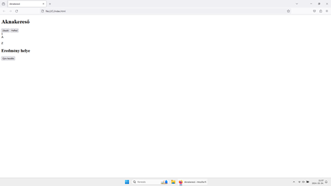
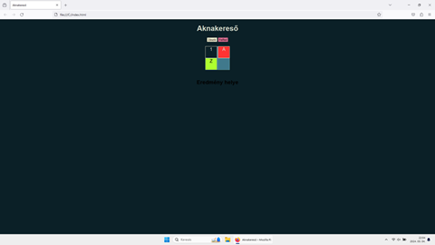
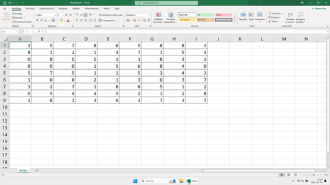
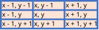

Aknakereső játék elkészítése HTML, CSS és JavaScript segítségével
Az aknakereső játék elkészítése remek kezdő lépés a programozás megismeréséhez. A HTML, CSS, JavaScript hármas egyszerűsége és támogatottsága miatt igen könnyedén megtudjuk valósítani ötleteinket.
Szükséges előkészületek
- HTML és CSS alapismeret (elhanyagolható)
- Szövegszerkesztő program (lehetőleg szoftverfejlesztőknek szánt pl.: Visual Studio Code)
- Modern webböngésző (pl.: Firefox, Google Chrome, stb.)
Mit is akarunk mi készíteni?
A játék elkészítéséhez szükséges ismerni magát a játék elvét és az alap műveleteit. Ha még nem ismered a "A játékról" menüpont alatt tudsz erről olvasni. Az elkészült játszható programhoz alapvető elvárásokat kell hozzárendelni:
- Jelenítse meg a játék tábláját
- A táblán legyenek rejtett aknák "szétszórva"
- A játékot kattintással lehessen használni
- Legyen lehetőség jelölni az aknák helyzetét
- Legyen lehetőség egy mezőt felfedni
- A hibás felfedés a játék végét okozza (nem játszahtó tovább)
- Ha véget ér a játék látható legyen, hogy miért (vereség vagy győzelem)
- Ha véget ér a játék legyen lehetőség az újra kezdéséhez
Elkészítés
Megjelenítési struktúra (HTML)
A választott eszközünk segítségével hihetetlen egyszerű módon eltudjuk készíteni a játékunk vázát (index.html). Nincs más dolgunk, mint egy weblapként elképzelni a leendő játékunk kinézetét. A HTML leírónyelv elemeit felhasználva, például a címsorokat (h1, h2, ...), a tárolokat (div) és a gombokat (button), már el is tudjuk készíteni a vázat.
<!DOCTYPE html>
<html lang="hu">
<head>
<meta charset="utf-8">
<title>Aknakereső</title>
</head>
<body>
<h1>Aknakereső</h1>
<button>Zászló</button>
<button>Felfed</button>
<br>
<div>
<div>1</div>
<div>A</div>
<br>
<div>Z</div>
<div></div>
</div>
<h2>Eredmény helye</h2>
<button>Újra kezdés</button>
</body>
</html>
Megjelenítés stílusosan (CSS)
Az eddig elkészített felületet nem éppen a szépségért szeretjük. Azonban ez orvosolható egy stíluslap (style.css) segítségével. A stíluslap segítségével jobb kinézetet tudunk varázsolni a játékunknak. A HTML elemeket úgy tudjuk elérni a stíluslapunkból, hogy az elemeket ellátjuk egy osztály (class) névvel, például a gombokat a gomb osztály névvel.
<!DOCTYPE html>
<html lang="hu">
<head>
<meta charset="utf-8">
<title>Aknakereső</title>
<link rel="stylesheet" href="./style.css">
</head>
<body>
<h1>Aknakereső</h1>
<button class="gomb">Zászló</button>
<button class="gomb kiválasztottGomb">Felfed</button>
<br>
<div class="board">
<div class="mező felfedett">1</div>
<div class="mező felfedett akna">A</div>
<br>
<div class="mező megjelölt">Z</div>
<div class="mező"></div>
</div>
<h2>Eredmény helye</h2>
<button class="gomb rejtett">Újra kezdés</button>
</body>
</html>body {
font-family: Arial, sans-serif;
text-align: center;
background-color: #0b2027;
}
h1 {
color: #cfd7c7;
}
.győzelem {
color: green;
}
.vereség {
color: red;
}
.rejtett {
visibility: hidden;
}
.tábla {
display: inline-block;
margin: 20px;
background-color: #40798c;
}
.mező {
width: 50px;
height: 50px;
border: 1px solid #70a9a1;
display: inline-block;
vertical-align: middle;
font-size: 20px;
cursor: pointer;
background-color: #40798c;
color: #cfd7c7;
}
.megjelölt {
background-color: greenyellow;
color: black;
}
.felfedett {
background-color: #0b2027;
border: 1px solid #f6f1d1;
color: #cfd7c7;
}
.akna {
background-color: #ff3333;
}
.gomb {
background-color: #f6f1d1;
border: none;
cursor: pointer;
}
.kiválasztottGomb {
background-color: palevioletred;
}
A játék lelke (JavaScript)
Most már valamelyest mutatós az eddigi munkánk. Ideje lenne írni hozzá néhány funkciót. A JavaScript az már egy tényleges programozási nyelv. Van benne minden, amire szükségünk lehet, változók (let, const), elágazások (if, else), ciklusok (while, for), függvények (function) és még rengeteg előre elkészített hasznos funkció, amik csak arra várnak, hogy használva legyenek.
A váz írányítása
A szkriptünkben (script.js) a HTML elemeket hasonlóan tudjuk elérni, mint a stíluslapunkban. Szükséges az elemeket ellátni egy azonosítóval (id), például a táblánkat a "tábla" azonosítóval.
const tábla_html = document.getElementById("tábla");Ezzel a módszerrel a táblánkat eltárolhatjuk a "tábla_html" konstans változóba. Ez azt jelenti, hogy a változó értéke nem módosítható. Ezzel jelezhetjük, hogy a változónak nem kell akarjuk az értékét változtatni a későbbiekben.
Csináljunk táblát
let tábla;Ez a tábla elég furcsa tábla. Nézzünk egy másik táblát.

Ez már kiindulási alapnak tökéletes. Ezt sem tudjuk belemásolni a kódunkba, de egy kis ötleteléssel minden lehetséges. Ha jól megnézzük a képet akkor nagyon hasonlít valami ismerősre. Egy mátrixra. Nem ismerős a mátrix?
A mátrixok – a lineáris algebra (egyik) leghasznosabb fogalmaként – a matematikának a gyakorlatban legtöbbször alkalmazott eszközei között vannak, a matematika számos más ága mellett pedig a fizikától és komputergrafikától kezdve a biológián át egészen a nyelvészetig, számtalan tudományágban használhatóak akár az elméleti leírás tömör megfogalmazására, akár a számítások megkönnyítésére vagy automatizálására. - Wikipédia
Ha elég bátor voltál elolvasni a a belinkelt wikipédia cikkbe, akkor már értheted, hogy miért is jó nekünk a mátrix. Ha nem az sem probléma. A mátrix egy téglalap alakú táblázata bármilyen adatnak. Lehet, hogy a táblázat jobb első ötlet lett volna, mint egy kedves matematikai fogalom. Egy táblázatnak oszlopai és sorai vannak. Sor... Mintha lenne ilyesmi eszközünk a programozásban.
let tábla = [];Ez egy JavaScript tömb (array), így már van egy sorunk. Hogyan lesz több sorunk? Természetesen sorok sorjával.
tábla[0] = [];
tábla[1] = [];
tábla[2] = [];Kezd alakulni az adatszerkezetünk. Vegyük hasznát ciklusoknak.
for(let i = 0; i < 9; i++) {
tábla[i] = [];
}Így sokkal egyszerűbb lesz dolgunk. most már van sok üres sorunk. Töltsük fel őket.
for(let i = 0; i < 9; i++) {
tábla[i] = [];
for(let j = 0; j < 9; j++) {
tábla[i][j] = {
akna: false,
felfedett: false,
megjelölt: false,
szomszédosAknákSzáma: 0
}
}
}Mit tettünk a sorokba? A tábla mezőinek a tulajdonságait. Van-e ott akna, fel van-e fedezve, meg van-e jelölve, mennyi akna van körülötte. Ez mind hasznos információ a játékunk szempontjából. Az egyszerű tárolásban segítségünkre van az objektum (object).
A táblára rejtett aknák kellenek, ráadásul szétszórva. Addig tegyünk aknákat a táblára, amíg nincs rajta elegendő.
let elhelyezettAknákSzáma = 0;
while (elhelyezettAknákSzáma < 10) {
const sor = Math.floor(Math.random() * 9);
const oszlop = Math.floor(Math.random() * 9);
if (!tábla[sor][oszlop].akna) {
tábla[sor][oszlop].akna = true;
elhelyezettAknákSzáma++;
}
}Hasznos ismerni a Math objektumot. A használatával sok hasznos funkciót érhetünk el. Például a fentebb használt Math.floor(), ami egy paraméterül adott számnak az egészrészét adja vissza vagy a Math.random(), ami egy 0 és 1 közötti véletlenszerű értéket ad vissza.
Most már vannak aknák szétszórva a táblán. Valami még így sincs rendben. A szomszédos aknák száma nem változott egyik mezőnél sem. Gyorsan orvosoljuk.
for (let i = 0; i < sorokSzáma; i++) {
for (let j = 0; j < oszlopokSzáma; j++) {
if (!tábla[i][j].akna) {
let szomszédosAknákSzáma = 0;
for (let yEltolás = -1; yEltolás <= 1; yEltolás++) {
for (let xEltolás = -1; xEltolás <= 1; xEltolás++) {
const sor = i + yEltolás;
const oszlop = j + xEltolás;
if (sor >= 0 && sor < sorokSzáma && oszlop >= 0 && oszlop < oszlopokSzáma && tábla[sor][oszlop].akna) {
szomszédosAknákSzáma++;
}
}
}
tábla[i][j].szomszédosAknákSzáma = szomszédosAknákSzáma;
}
}
}Ez egy kicsit bonyolultra sikeredett. Itt egy kép, ami segíthet a megértésben.

Az eddig írt kódunk mind egy funkciónak működését segítik elő, egy tábla létrohozását. Tegyük bele az eddig írt kódunkat egy a funkciókat jól összefoglaló nevő függvénybe.
function táblaLétrehozása() {
// a tábla mezőinek létrehozása
...
// az aknák szétszórása
...
// a szomszédos aknák megszámolása
...
}Hasznájuk azt a táblát
Az eddig létrehozott táblánk nem sok vizet zavar. Hozzunk létre egy függvényt, amellyel könnyedén módosíthatjuk azt.
function mezőMűvelet(sor, oszlop) {
}Egy mezőre kettő lehetséges műveletet adtunk meg az elején. A megjelölés és a felfedés műveletet. Honnan tudhatjuk, hogy éppen mit akarhat a játékos? Eldöntéssel.
if(zászlóMód) {
} else {
}Ha jelölünk az pofon egyszerű.
tábla[sor][oszlop].megjelölt = !(tábla[sor][oszlop]);Ha nem az már egy kicsit bonyolultabb. Először fel kell fedni a kivánt mezőt.
tábla[sor][oszlop].felfedezett = true;Továbbá az is kérdéses hogy a felfedett mezőn van-e akna. Ha van akkor a játéknak véget kell érnie vereséggel. Viszont nem csak ebben az esetben van vége a játéknak. Akkor is véget kell érnie, ha győzelem következik be. Győzelem akkor lesz, ha minden nem akna mezőt felfedett a játékos.
if (tábla[sor][oszlop].akna) {
// vége verseséggel
} else {
felfedettMezőkSzáma++;
if(felfedettMezőkSzáma == 9 * 9 - 10) {
// vége győzelemmel
}
}Vége, de hogyan?
Írjunk egy függvényt!
function vége(siker) {
játékVége = true;
újra_html.classList.remove("rejtett");
if(siker) {
eredmény_html.textContent = "Sikerült megoldani :)";
eredmény_html.className = "győzelem";
} else {
eredmény_html.textContent = "Nem sikerült megoldani :(";
eredmény_html.className = "vereség";
}
}Ha vége van, akkor vége van. Jelenítsük meg az eredményt és az újra kezdés lehetőségét felajánló gombot. Ezt a "Váz írányítása" bekezdésben bemutatott módon tudjuk. Ha már tudunk hivatkozni a HTML elemekre, akkor tudjuk azokat módosítani is.
Gombok életre keltése
A HTML elemek és a JavaScript leghasznosabb közös művelete az a figyelő létrehozása egy HTML elemhez. Ez a figyelő vár a beállított "jelre". Ha érzékeli, akkor végre hajt egy előre meghatározott függvényt.
újra_html.addEventListener(
"click",
() => {
játékKezdése();
}
);Az újra kezdés gomb esetén ez így néz ki. A "click" (kattintás) az a kívánt jel. A következő sor érdekesebb. Ott egy nyíl függvény (Arrow Function) található.
A többi gomb is hasonlóan ellátható ilyen figyelővel.
zászló_html.addEventListener(
"click",
() => {
zászlóMód = true;
zászló_html.classList.add("kiválasztottGomb");
felfed_html.classList.remove("kiválasztottGomb");
}
);
felfed_html.addEventListener(
"click",
() => {
zászlóMód = false;
zászló_html.classList.remove("kiválasztottGomb");
felfed_html.classList.add("kiválasztottGomb");
}
);A tábla megjelenítése
Az eddigi munkánk mit sem ér addig amíg a tábla nem változik a játék téren. Az eddig ismertetett funkciókkal, azonban könnyedén elkészíthető ez a funkció.
function táblaMegjelenítése() {
tábla_html.innerHTML = "";
for (let i = 0; i < 9; i++) {
for (let j = 0; j < 9; j++) {
const mező_html = document.createElement("div");
mező_html.className = "mező";
if (tábla[i][j].felfedezett) {
mező_html.classList.add("felfedett");
if ( tábla[i][j].akna ) {
mező_html.classList.add("akna");
mező_html.textContent = "A";
} else if (tábla[i][j].szomszédosAknákSzáma > 0) {
mező_html.textContent = tábla[i][j].szomszédosAknákSzáma;
}
}
else if (tábla[i][j].megjelölt) {
mező_html.classList.add("megjelölt");
mező_html.textContent = "Z";
}
mező_html.addEventListener(
"click",
() => mezőMűvelet(i, j)
);
tábla_html.appendChild(mező_html);
}
tábla_html.appendChild(
document.createElement("br")
);
}
}Utolsó simítások
A kód összefésülése
Ahoz, hogy megfelelően működjön a programunk a megírt kódot helyes sorrendben kell elhelyeznünk a szkript (script.js) fájlunkban. Ez azért fontos, hiszen egy ilyen szkript fájl fentről lefelé van végig olvasva, tehát nem hivatkozhaunk olyan változókra és függvényekre amik még nem volt eddig leírva.
A kód végrehajtása
A kódunkat hivatkoznunk kell a HTML fájlunkban, a mi esetünkben az index.html fájlban, ügyelve a helyes sorrendre ebben az eseben is.
<script src="./script.js"></script>